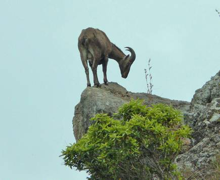
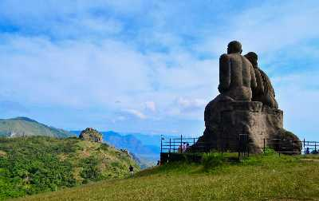
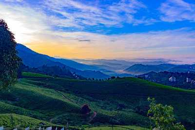
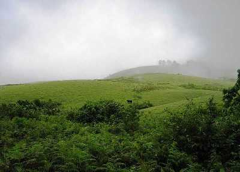
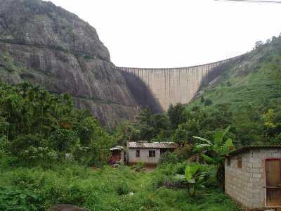
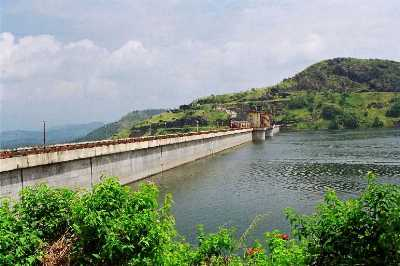

ERAVIKULAM NATIONAL PARK
Located a 45 - minute drive away from Munnar, the Eravikulam National Park houses a rich and diverse variety of flora and fauna and is a UNESCO world heritage site. Also known as Rajamalai Wildlife Sanctuary, this place was managed as a game reserve by the Kanan Devan Hills Produce Company before 1971. The control was taken over by the Karnataka Government in 1971, and it was declared a national park in 1978. Elephant, Nilgiri langur, Nilgiri marten, Atlas moth (largest in the world), lion-tailed macaque, small-clawed otter and a rare tiger or leopard are some of the main animal species that can be spotted here.

RAMAKKALMEDU
An exquisite hill station situated in the Idukki District on the Kerala-Tamil Nadu state border and home to a number of attractions Ramakkalmedu is a must-visit attraction. Its name can be broken down into three words namely Ram, Kal, and Medu referring to Lord Rama, rock, and land. According to legend, this place was visited by Lord Rama while he was searching for his wife Sita who was kidnapped by Ravana, the king of Lanka. While his search was going on, he stepped on the tallest rock while looking for Sita which was named as Ramakkal and later came to be known as Ramakkalmedu.

ANAMUDI PEAK
Kerala's breathtaking beauty has wooed travellers from all over the globe. Gorgeous beaches, meandering rivers, beautiful waterfalls, and exotic flora and fauna, Kerala has it all. Located in the Idukki district, along the western ghats of Kerala is Anamudi Shola National Park, a remarkable national reserve spread over 7.5 km square. The park is famous for its tranquil environment and biodiversity, preferred by thousands of travellers that flock in here to get away from the city life.

VAGAMON
1100 meters above sea, far way from the loud city culture, lush greenery and serenity to gift every visitor, Vagamon could be your quiet offbeat hill station in Kerala away from maddening tourist crowds. If you are a forest lover, the first place you should visit in Vagamon is the Vagamon Pine forest, which is the major tourist attraction of this place. A very popular spot for movie shootings, Vagamon forest is actually a man-made forest which was created during the British era. The forest overlooks the entire Vagamon valley and is a beautiful place where you can go for a long walk, or just sit under a pine tree and breathe in the fresh mountain air

IDUKKI ARCH DAM
Built across the Kuravan and Kurathi hills at a height of about 550 feet, the Idukki Arch Dam is an architectural genius, for the rugged terrain along which it is built. The natural beauty surrounding the dam is breath-taking.

CHERUTHONI DAM
An ideal picnic spot situated in the Idukki District of Kerala, the Cheruthoni Dam being 138 m tall is the largest concrete gravity dam close to the Idukki Arch Dam. Constructed across the Periyar River, this third highest dam in the country was built in 1976 as a part of the Idukki Hydroelectric project along with two other dams namely Kulamavu and Idukki. The dam is looked after by the Kerala State Electricity Board and also rents out boats to engage in the two-hour cruise between Kulamavu and Idukki. On the way, visitors are spellbound by the beauty that this place offers and the enchanting views of the sunrise and sunset that one gets to experience from here.